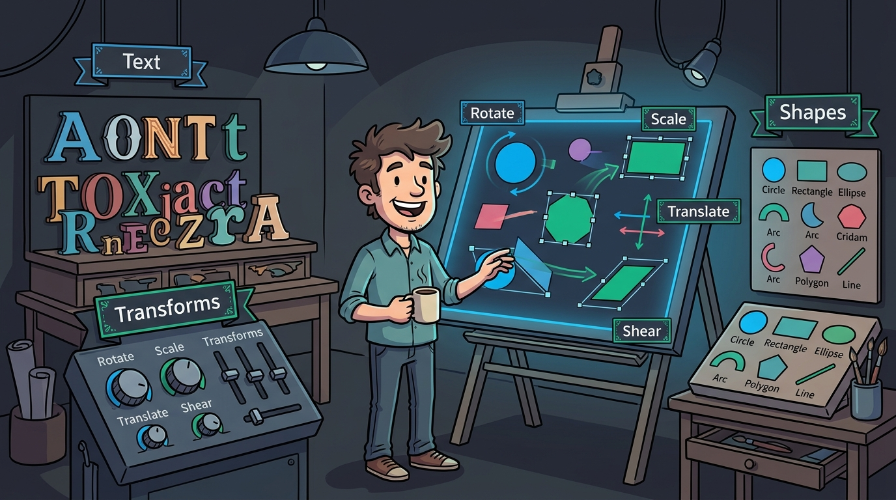
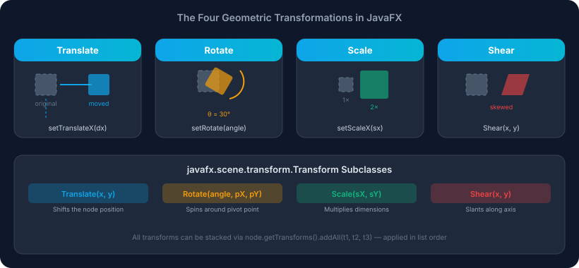
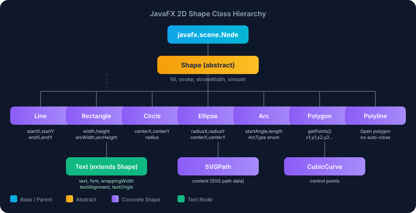
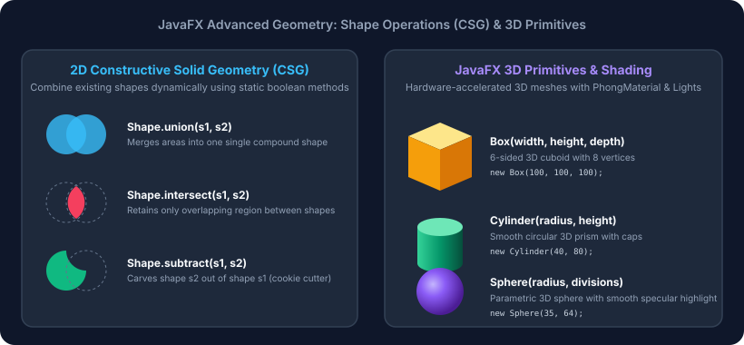

Session 14 — JavaFX Text, Transformations and Shapes
In Session 13, you stepped into the visual desktop and discovered the Theatre Metaphor — stages, scenes, and scene graphs. Today, you take full command of the visual canvas. You will learn to draw, style, transform, and animate custom 2D and 3D graphics with mathematical precision. You will discover why JavaFX treats typography as geometric vectors, how to spin and scale shapes around custom pivot points, how to carve complex corporate badges out of basic primitives with boolean Constructive Solid Geometry, how to render true 3D meshes with specular lighting, and how to bring static illustrations to life with smooth GPU-accelerated transitions.
- Explain the architecture of the
Textnode, configure font weights, postures, and baseline coordinates, and assemble multi-style inline documents usingTextFlow. - Apply the four fundamental 2D geometric transformations (
Translate,Rotate,Scale, andShear) and compute custom pivot points (pivotX,pivotY). - Distinguish between shorthand node transform properties and cumulative
getTransforms()lists, and prove why transformation order matters. - Construct 2D vector primitives including
Line,Rectangle(with rounded corners),Circle,Ellipse,Polygon, andArc(Open, Chord, Round). - Style shapes with
LinearGradient,RadialGradient, custom cycle methods, and advanced stroke properties (stroke types, caps, joins, and dash arrays). - Apply Constructive Solid Geometry (CSG) boolean operations (
Shape.union(),Shape.intersect(),Shape.subtract()) to carve compound vector iconography. - Build hardware-accelerated 3D scenes using
Shape3Dmeshes (Box,Cylinder,Sphere),PhongMaterialdiffuse and specular shaders,PointLight/AmbientLightrigs, and GPU depth buffering. - Choreograph smooth hardware-accelerated animations using
RotateTransition,ScaleTransition,ParallelTransition, andSequentialTransition.
Your Roadmap for Today
Why This Matters
In traditional user interface development, if a designer wanted an icon, a custom button border, a gauge, or a badge, developers had to import static raster images (PNG, JPEG, GIF). Raster graphics have severe weaknesses in modern software: they pixelate when scaled on high-DPI "Retina" or 4K monitors, consume large amounts of memory, and cannot be dynamically recolored, rotated, or adapted to dark mode without loading entirely new graphic files.
JavaFX solves this completely through resolution-independent vector graphics and retained-mode geometry. Instead of storing static grids of pixels, JavaFX stores geometric mathematical descriptions: lines, curves, angles, radii, color gradients, and transformation matrices. The Prism graphics engine streams these formulas directly to your GPU via DirectX, Metal, or OpenGL shaders, rendering razor-sharp visual elements at 60 or 120 frames per second at any display resolution.
- The 2D Shapes (
Shape) are sheets of stained glass cut with exact laser templates (rectangles, circles, polygons, and bezier curves). - Fills & Gradients (
Paint) are the liquid pigments and pearlescent glazes applied to the glass. A linear gradient flows color smoothly from edge to edge, while a radial gradient radiates light outward like a glowing jewel. - Transformations (
Transform) are the mechanical drafting arms on your easel. You can slide the glass across the table (translation), turn it around a thumb-tack pin (rotation around a pivot), stretch it under a magnifying glass (scaling), or tilt it sideways into italic slant (shearing) — all without ever recutting the glass! - Constructive Solid Geometry (CSG) is your precision laser cutter: you lay two pieces of glass together and weld them into one (
union), keep only the section where they overlap (intersect), or use one shape as a metal punch to stamp a hole clean through another (subtract). - 3D Shapes (
Shape3D) move off the drafting table into physical marble sculpture: you shape 3D boxes, cylinders, and spheres, illuminate them with spotlights, and turn them around depth axes in 3D space.

Figure 14.1 — The JavaFX Vector Studio: Typography, 2D Primitives, Transformations, CSG Boolean Carving, and 3D Shaded Meshes.
Part 1 of 7 JavaFX Text, Typography & TextFlow
In Session 13, you used javafx.scene.control.Label to display text. A Label is a
high-level user interface Control equipped with borders, padding, graphic icons, and tooltips.
However, when you need fine-grained graphic typography — such as text with gradient fills, outlined
strokes, complex text wrapping, or mixed inline styles — JavaFX provides the specialized
javafx.scene.text.Text node.
Crucially, Text does not inherit from Control; it inherits directly from
javafx.scene.shape.Shape! This means every character glyph is treated as a true
vector shape. You can stroke its outline, fill its interior with a gradient, apply drop shadows, and scale or
rotate it just like a circle or rectangle.
| Feature | javafx.scene.control.Label |
javafx.scene.text.Text |
|---|---|---|
| Superclass | javafx.scene.control.Control → Region |
javafx.scene.shape.Shape → Node |
| Primary Purpose | UI forms, buttons, labeled input fields, status banners. | Graphic typography, vector art, document rendering, canvas labels. |
| Styling Mechanism | CSS properties (-fx-text-fill, -fx-font). |
Shape methods (setFill(), setStroke(), setStrokeWidth()). |
| Coordinate Origin | Top-left corner of the control bounding box (0, 0). | The font baseline at (x, y). Character descenders hang below! |
| Rich Inline Text | Single font and single color for entire label. | Multiple Text spans combined inside a TextFlow container. |
Font Loading and Typography Properties
Fonts in JavaFX are represented by the immutable javafx.scene.text.Font class.
You create fonts using static factory methods that accept the font family name, weight (thin to black),
posture (regular or italic), and point size:
// Standard font factory
Font headerFont = Font.font("Segoe UI", FontWeight.BOLD, FontPosture.REGULAR, 26);
Font italicFont = Font.font("Georgia", FontWeight.NORMAL, FontPosture.ITALIC, 14);
// Query all font families available on the operating system
List<String> families = Font.getFamilies();The Text Baseline Coordinate Trap
The most common bug encountered by beginners when working with Text is assuming that
setX(0) and setY(0) places the text at the top-left corner of the window.
It does not! In JavaFX, the y coordinate of a Text node specifies
the baseline upon which the letters sit. If you position text at y = 0, the
entire text body sits above the top edge of the window in negative coordinate space and is completely invisible!
To make text visible inside a manual coordinate pane, the y coordinate must be at least equal to
the font size (e.g., y = 24 for a 20pt font).
TextFlow: Rich Multi-Style Inline Paragraphs
If you want a paragraph where some words are bold, some are red, and others are clickable links, placing multiple
individual Text nodes in an HBox will fail because HBox does not wrap
words across multiple lines. The solution is javafx.scene.text.TextFlow.
TextFlow lays out its child Text nodes like a continuous flowing document, wrapping
words smoothly from line to line while preserving individual colors, fonts, and inline nodes:
Text t1 = new Text("Enrolment Status: ");
t1.setFont(Font.font("Segoe UI", FontWeight.BOLD, 14));
Text t2 = new Text("APPROVED");
t2.setFont(Font.font("Segoe UI", FontWeight.BLACK, 14));
t2.setFill(Color.GREEN);
TextFlow flow = new TextFlow(t1, t2);Worked Example: Text and Typography Inspection
Let us run E01_TextAndTypography.java to inspect font metrics, outline strokes, wrapping widths,
and TextFlow assembly.
package com.aptech.s14;
import javafx.application.Application;
import javafx.geometry.Insets;
import javafx.geometry.Pos;
import javafx.scene.Scene;
import javafx.scene.layout.VBox;
import javafx.scene.paint.Color;
import javafx.scene.text.Font;
import javafx.scene.text.FontPosture;
import javafx.scene.text.FontSmoothingType;
import javafx.scene.text.FontWeight;
import javafx.scene.text.Text;
import javafx.scene.text.TextAlignment;
import javafx.scene.text.TextBoundsType;
import javafx.scene.text.TextFlow;
import javafx.stage.Stage;
/**
* Session 14 - Example 1: JavaFX Text and Typography
*
* Demonstrates:
* 1. The Text node (subclass of Shape) vs the Control Label.
* 2. Typography styling: Font families, weights, postures, and sizes.
* 3. Shape fill, stroke, and strokeWidth applied to text glyphs.
* 4. Text alignment, wrapping width, and baseline origin mechanics.
* 5. TextBoundsType: LOGICAL (for layout flow) vs VISUAL (tight glyph bounding box).
* 6. TextFlow: Combining multiple styled Text nodes with inline formatting.
*/
public class E01_TextAndTypography {
public static class TextApp extends Application {
@Override
public void start(Stage primaryStage) {
System.out.println("=== JavaFX Text & Typography Inspection ===");
// 1. Primary Heading: Rich Typography with fill & stroke
Text heading = new Text("Aptech Graphic Studio");
heading.setFont(Font.font("Segoe UI", FontWeight.BOLD, FontPosture.REGULAR, 26));
heading.setFill(Color.CORNFLOWERBLUE);
heading.setStroke(Color.DARKSLATEBLUE);
heading.setStrokeWidth(1.2);
heading.setUnderline(true);
// 2. Subheading: Demonstrating baseline coordinate trap
// Text coordinates (X, Y) specify the font BASELINE, not the top-left corner!
Text baselineNote = new Text(0, 20, "Coordinates (X, Y) place the text BASELINE, not top-left.");
baselineNote.setFont(Font.font("Verdana", FontWeight.NORMAL, FontPosture.ITALIC, 13));
baselineNote.setFill(Color.DODGERBLUE);
// 3. Paragraph Text with automatic wrapping and justification
Text paragraph = new Text(
"JavaFX treats every Text node as a true geometric Shape. Because Text inherits from " +
"javafx.scene.shape.Shape, you can apply geometric fills, linear gradients, outline strokes, " +
"clipping paths, and hardware-accelerated 2D transforms directly to typography."
);
paragraph.setFont(Font.font("Segoe UI", 14));
paragraph.setFill(Color.DARKGRAY);
paragraph.setWrappingWidth(440);
paragraph.setTextAlignment(TextAlignment.JUSTIFY);
// 4. Bounds Type: Logical vs Visual
Text boundsDemo = new Text("Glyph Bounding Box");
boundsDemo.setFont(Font.font("Arial", FontWeight.BOLD, 18));
boundsDemo.setBoundsType(TextBoundsType.VISUAL);
boundsDemo.setFontSmoothingType(FontSmoothingType.LCD);
// 5. TextFlow: Rich inline document structure
Text flowPart1 = new Text("Status: ");
flowPart1.setFont(Font.font("Segoe UI", FontWeight.BOLD, 13));
flowPart1.setFill(Color.BLACK);
Text flowPart2 = new Text("Hardware Acceleration Active ");
flowPart2.setFont(Font.font("Segoe UI", FontWeight.NORMAL, 13));
flowPart2.setFill(Color.GREEN);
Text flowPart3 = new Text("[Prism D3D/Metal]");
flowPart3.setFont(Font.font("Courier New", FontWeight.BOLD, 12));
flowPart3.setFill(Color.CRIMSON);
TextFlow statusFlow = new TextFlow(flowPart1, flowPart2, flowPart3);
statusFlow.setPadding(new Insets(8));
// Assemble Layout
VBox root = new VBox(14, heading, baselineNote, paragraph, boundsDemo, statusFlow);
root.setPadding(new Insets(20));
root.setAlignment(Pos.TOP_LEFT);
// Print node metrics to console for verification
System.out.println("Heading Font: " + heading.getFont());
System.out.println("Heading Fill: " + heading.getFill());
System.out.println("Heading Stroke: " + heading.getStroke() + " (width=" + heading.getStrokeWidth() + "px)");
System.out.println("Paragraph Wrapping Width: " + paragraph.getWrappingWidth() + "px");
System.out.println("Bounds Demo Local Bounds: " + boundsDemo.getBoundsInLocal());
System.out.println("TextFlow child count: " + statusFlow.getChildren().size());
Scene scene = new Scene(root, 520, 360);
primaryStage.setTitle("JavaFX Text & Typography Demo");
primaryStage.setScene(scene);
primaryStage.show();
}
}
public static void main(String[] args) {
Application.launch(TextApp.class, args);
}
}| Lines | What it does | Why it matters |
|---|---|---|
36–43 | Instantiates Text with Font.font("Segoe UI", FontWeight.BOLD, ...), fill color, and stroke outline. | Demonstrates that Text is a shape whose outline and interior are colored independently. |
47–50 | Demonstrates baseline placement at (0, 20). | Guarantees text renders below the viewport ceiling instead of vanishing off-screen. |
53–62 | Sets setWrappingWidth(440) and setTextAlignment(TextAlignment.JUSTIFY). | Enables automatic multi-line word wrapping and justified column alignment on paragraph blocks. |
65–68 | Sets setBoundsType(TextBoundsType.VISUAL). | Calculates tight bounding box around the actual drawn glyph pixels rather than logical line height. |
71–83 | Combines three distinct Text nodes into a single TextFlow container. | Builds rich, multi-colored inline documents without breaking paragraph layout. |
Program Output
Textis aShape, allowing vector strokes, fills, gradients, and transforms.- Coordinates
(x, y)anchor the font baseline, not the top-left corner. TextFlowprovides multi-style, multi-color inline document wrapping across lines.- Use
Labelfor standard UI forms; useTextfor graphic vector typography.
Part 2 of 7 2D Geometric Transformations & Pivot Points
In computer graphics, a transformation alters the visual position, orientation, size, or slant of a node by multiplying its coordinates by a mathematical transformation matrix. Importantly, transformations in JavaFX are non-destructive: transforming a rectangle does not alter its fundamental width, height, or local definition. Instead, it alters how the GPU projects the node onto the screen.

Figure 14.2 — The Four Fundamental 2D Geometric Transformations in JavaFX.
The Four Core Transformations
| Transformation | Transform Class | Node Shorthand | Physical Effect |
|---|---|---|---|
| Translation | javafx.scene.transform.Translate |
setTranslateX(dx)setTranslateY(dy) |
Shifts the node along the X (horizontal) and Y (vertical) axes without rotation or resizing. |
| Rotation | javafx.scene.transform.Rotate |
setRotate(degrees) |
Spins the node clockwise around a specified pivot point (pivotX, pivotY) by an angle in degrees. |
| Scaling | javafx.scene.transform.Scale |
setScaleX(sx)setScaleY(sy) |
Expands or shrinks the node by factors x and y relative to a pivot point. |
| Shearing | javafx.scene.transform.Shear |
(None — use transform list) | Slants/skews the node coordinates parallel to an axis, turning rectangles into parallelograms. |
The Pivot Point: Center Rotation vs Corner Rotation
When you call the convenience method node.setRotate(45), JavaFX automatically rotates the node
around its geometric center: (layoutBounds.width / 2, layoutBounds.height / 2).
However, when you instantiate a Rotate object directly:
// Default Rotate constructor: pivots around (0, 0) top-left corner!
Rotate cornerRot = new Rotate(45);
// Explicit Rotate constructor: pivots around center point (40, 25)
Rotate centerRot = new Rotate(45, 40, 25);If you omit the pivot arguments, the shape will swing in a wide arc around the top-left origin (0, 0), often swinging entirely off the visible screen! Always specify explicit pivot coordinates when using transform objects.
Why Transformation Order Matters (Non-Commutative Matrix Math)
In arithmetic, addition and multiplication are commutative ($3 \times 5 = 5 \times 3$).
Matrix multiplication in computer graphics is NOT commutative!
The order in which transformations are added to node.getTransforms() completely alters the visual result:
- Order A: Translate(50, 0) then Rotate(45) — The shape slides 50 pixels to the right along the screen's world axis, and then spins in place 45 degrees.
- Order B: Rotate(45) then Translate(50, 0) — The shape rotates 45 degrees first. Because the local coordinate axis is now tilted 45 degrees, the subsequent translation of 50 pixels moves the shape diagonally down and to the right!
Worked Example: 2D Transformations in Action
Let us run E02_Transformations2D.java to observe translation, center-pivot rotation, scaling,
shearing, and the order-of-transforms experiment.
package com.aptech.s14;
import javafx.application.Application;
import javafx.geometry.Insets;
import javafx.geometry.Pos;
import javafx.scene.Scene;
import javafx.scene.layout.HBox;
import javafx.scene.layout.VBox;
import javafx.scene.paint.Color;
import javafx.scene.shape.Rectangle;
import javafx.scene.text.Font;
import javafx.scene.text.FontWeight;
import javafx.scene.text.Text;
import javafx.scene.transform.Rotate;
import javafx.scene.transform.Scale;
import javafx.scene.transform.Shear;
import javafx.scene.transform.Translate;
import javafx.stage.Stage;
/**
* Session 14 - Example 2: 2D Geometric Transformations
*
* Demonstrates:
* 1. The four core transformations: Translation, Rotation, Scaling, and Shearing.
* 2. Pivot point mechanics: Rotating/Scaling around center (pivotX, pivotY) vs top-left origin (0, 0).
* 3. Cumulative transform pipeline via node.getTransforms().addAll(...).
* 4. Critical rule: Transformation order matters! (Translate-then-Rotate != Rotate-then-Translate).
*/
public class E02_Transformations2D {
public static class TransformApp extends Application {
@Override
public void start(Stage primaryStage) {
System.out.println("=== JavaFX 2D Geometric Transformations Inspection ===");
// Reference original shape: 80x50 rectangle
Rectangle originalRect = new Rectangle(80, 50, Color.LIGHTGRAY);
originalRect.setStroke(Color.BLACK);
originalRect.setStrokeWidth(1.5);
// 1. Translation: Shifts position along X and Y axes
Rectangle translatedRect = new Rectangle(80, 50, Color.CORNFLOWERBLUE);
translatedRect.setStroke(Color.DARKSLATEBLUE);
Translate translate = new Translate(25, 15);
translatedRect.getTransforms().add(translate);
// 2. Rotation around custom pivot point (center of the rectangle: 40, 25)
Rectangle rotatedRect = new Rectangle(80, 50, Color.GOLD);
rotatedRect.setStroke(Color.ORANGE);
// Pivot point at center (40, 25), rotated 45 degrees
Rotate rotate = new Rotate(45, 40, 25);
rotatedRect.getTransforms().add(rotate);
// 3. Scaling around center pivot (scale 1.3x horizontally, 0.8x vertically)
Rectangle scaledRect = new Rectangle(80, 50, Color.CYAN);
scaledRect.setStroke(Color.TEAL);
Scale scale = new Scale(1.3, 0.8, 40, 25);
scaledRect.getTransforms().add(scale);
// 4. Shearing (Skewing) along X axis
Rectangle shearedRect = new Rectangle(80, 50, Color.DEEPPINK);
shearedRect.setStroke(Color.CRIMSON);
Shear shear = new Shear(0.35, 0.0, 0, 25);
shearedRect.getTransforms().add(shear);
// 5. Demonstrating that Transform Order Matters
// Shape A: Translate first, then Rotate
Rectangle orderA = new Rectangle(60, 40, Color.GREEN);
orderA.getTransforms().addAll(new Translate(50, 0), new Rotate(45, 0, 0));
// Shape B: Rotate first, then Translate
Rectangle orderB = new Rectangle(60, 40, Color.RED);
orderB.getTransforms().addAll(new Rotate(45, 0, 0), new Translate(50, 0));
// Output transformation details to console
System.out.println("Original bounds: " + originalRect.getBoundsInLocal());
System.out.println("Translation applied: " + translate);
System.out.println("Rotation applied: " + rotate + " (Center Pivot)");
System.out.println("Scale applied: " + scale);
System.out.println("Shear applied: " + shear);
System.out.println("\n--- Transform Order Experiment ---");
System.out.println("Order A (Translate then Rotate) transforms: " + orderA.getTransforms());
System.out.println("Order B (Rotate then Translate) transforms: " + orderB.getTransforms());
System.out.println("Notice: Order B translates along the ROTATED local axis!");
// Layout rows
Text title = new Text("2D Transformations: Translate, Rotate, Scale, Shear");
title.setFont(Font.font("Segoe UI", FontWeight.BOLD, 16));
HBox showcaseRow = new HBox(30, originalRect, translatedRect, rotatedRect, scaledRect, shearedRect);
showcaseRow.setAlignment(Pos.CENTER);
showcaseRow.setPadding(new Insets(20));
HBox orderRow = new HBox(40, orderA, orderB);
orderRow.setAlignment(Pos.CENTER);
orderRow.setPadding(new Insets(10));
VBox root = new VBox(20, title, showcaseRow, orderRow);
root.setPadding(new Insets(20));
root.setAlignment(Pos.TOP_CENTER);
Scene scene = new Scene(root, 620, 380);
primaryStage.setTitle("JavaFX 2D Transformations Demo");
primaryStage.setScene(scene);
primaryStage.show();
}
}
public static void main(String[] args) {
Application.launch(TransformApp.class, args);
}
}| Lines | What it does | Why it matters |
|---|---|---|
42–44 | Applies new Translate(25, 15) to translatedRect. | Moves node 25px right and 15px down without modifying original width or height. |
49–52 | Applies new Rotate(45, 40, 25). | Spins rectangle 45 degrees around its exact center point (40, 25). |
57–60 | Applies new Scale(1.3, 0.8, 40, 25). | Widens shape by 30% and compresses height by 20% around the center pivot. |
65–68 | Applies new Shear(0.35, 0.0, 0, 25). | Skews the horizontal edges to create an italicized parallelogram. |
72–78 | Compares Order A (Translate then Rotate) vs Order B (Rotate then Translate). | Demonstrates non-commutative transformation order: Order B slides along the tilted axis. |
Program Output
Part 3 of 7 Two-Dimensional Shape Primitives & Stroke Styling
All two-dimensional vector graphics in JavaFX inherit from the abstract class
javafx.scene.shape.Shape. A Shape encapsulates a geometric boundary,
an interior color or paint (fill), and a perimeter outline (stroke).

Figure 14.3 — JavaFX 2D Shape Class Hierarchy and Geometric Property Bindings.
The Core 2D Shape Classes
| Class | Key Properties & Constructor | Description & Use Cases |
|---|---|---|
Line |
startX, startY, endX, endY |
Straight vector segment between two 2D points. Has no fill; styled entirely with stroke. |
Rectangle |
x, y, width, height, arcWidth, arcHeight |
Four-sided box. Setting arcWidth and arcHeight rounds the four corners. |
Circle |
centerX, centerY, radius |
Equidistant circle defined by a center origin and radius. Ideal for avatars and pins. |
Ellipse |
centerX, centerY, radiusX, radiusY |
Stretched circular oval with distinct horizontal and vertical radii. |
Polygon |
getPoints().addAll(x1, y1, x2, y2, ...) |
Closed multi-sided polygon (triangles, hexagons, stars). The last point automatically connects to the first. |
Polyline |
getPoints().addAll(...) |
Open sequence of connected line segments. The last point does not connect back to the start. |
Arc |
centerX, centerY, radiusX, radiusY, startAngle, length, type |
Partial elliptical arc. Closure types: OPEN (unclosed), CHORD (straight line closure), ROUND (pie slice). |
Advanced Stroke Styling
Every Shape allows exhaustive customization of its outline through stroke properties:
StrokeType:StrokeType.CENTERED(default): Stroke expands equally inward and outward from the boundary line.StrokeType.INSIDE: Stroke stays entirely inside the shape's bounds (prevents clipping).StrokeType.OUTSIDE: Stroke expands entirely outward from the boundary line.
StrokeLineCap: Controls how the ends of unclosed lines are capped:SQUARE,BUTT, orROUND.StrokeLineJoin: Controls how sharp corners are joined:MITER(sharp corner),BEVEL(chamfered flat corner), orROUND(smooth rounded corner).strokeDashArray: An observable list of double values defining the alternating lengths of dashes and gaps (e.g.,10, 5, 2, 5creates a dash-dot pattern).
Worked Example: 2D Shape Gallery
Let us run E03_TwoDimensionalShapes.java to render lines, rounded rectangles, circles,
ellipses, polygons, and pie arcs.
package com.aptech.s14;
import javafx.application.Application;
import javafx.geometry.Insets;
import javafx.geometry.Pos;
import javafx.scene.Scene;
import javafx.scene.layout.GridPane;
import javafx.scene.layout.VBox;
import javafx.scene.paint.Color;
import javafx.scene.shape.Arc;
import javafx.scene.shape.ArcType;
import javafx.scene.shape.Circle;
import javafx.scene.shape.Ellipse;
import javafx.scene.shape.Line;
import javafx.scene.shape.Polygon;
import javafx.scene.shape.Rectangle;
import javafx.scene.shape.StrokeLineCap;
import javafx.scene.shape.StrokeLineJoin;
import javafx.scene.shape.StrokeType;
import javafx.scene.text.Font;
import javafx.scene.text.FontWeight;
import javafx.scene.text.Text;
import javafx.stage.Stage;
/**
* Session 14 - Example 3: Two-Dimensional Shape Primitives and Stroke Styling
*
* Demonstrates:
* 1. Concrete 2D Shape subclasses: Line, Rectangle, Circle, Ellipse, Polygon, Arc.
* 2. Rounded corner geometry on Rectangle (arcWidth, arcHeight).
* 3. Arc closure types: ArcType.OPEN, ArcType.CHORD, ArcType.ROUND.
* 4. Stroke mechanics: StrokeType (INSIDE, OUTSIDE, CENTERED), StrokeLineCap, StrokeLineJoin.
* 5. Dashed and dotted outlines via strokeDashArray.
*/
public class E03_TwoDimensionalShapes {
public static class ShapeApp extends Application {
@Override
public void start(Stage primaryStage) {
System.out.println("=== JavaFX 2D Shape Primitives & Stroke Styling ===");
// 1. Line with custom end-caps and dash pattern
Line dashedLine = new Line(0, 0, 100, 50);
dashedLine.setStroke(Color.DODGERBLUE);
dashedLine.setStrokeWidth(3.0);
dashedLine.setStrokeLineCap(StrokeLineCap.ROUND);
dashedLine.getStrokeDashArray().addAll(10.0, 5.0, 2.0, 5.0);
// 2. Rounded Rectangle with custom stroke join
Rectangle roundedRect = new Rectangle(110, 65, Color.CORNFLOWERBLUE);
roundedRect.setArcWidth(25);
roundedRect.setArcHeight(25);
roundedRect.setStroke(Color.DARKSLATEBLUE);
roundedRect.setStrokeWidth(3.0);
roundedRect.setStrokeType(StrokeType.INSIDE);
// 3. Circle with centered stroke
Circle circle = new Circle(40, Color.GOLD);
circle.setStroke(Color.DARKORANGE);
circle.setStrokeWidth(3.0);
// 4. Ellipse (radiusX=55, radiusY=35)
Ellipse ellipse = new Ellipse(55, 35);
ellipse.setFill(Color.TEAL);
ellipse.setStroke(Color.CYAN);
ellipse.setStrokeWidth(2.5);
// 5. Polygon: Equilateral Hexagon (6 vertices)
Polygon hexagon = new Polygon();
double radius = 42;
double centerX = 45, centerY = 45;
for (int i = 0; i < 6; i++) {
double angle = 2 * Math.PI / 6 * i;
double px = centerX + radius * Math.cos(angle);
double py = centerY + radius * Math.sin(angle);
hexagon.getPoints().addAll(px, py);
}
hexagon.setFill(Color.DEEPPINK);
hexagon.setStroke(Color.CRIMSON);
hexagon.setStrokeWidth(2.5);
hexagon.setStrokeLineJoin(StrokeLineJoin.ROUND);
// 6. Arc (Pie slice): ArcType.ROUND
Arc pieSlice = new Arc(45, 45, 45, 45, 30, 240);
pieSlice.setType(ArcType.ROUND);
pieSlice.setFill(Color.ORANGE);
pieSlice.setStroke(Color.DARKRED);
pieSlice.setStrokeWidth(2.0);
// Log parameters
System.out.println("Line: " + dashedLine + " [Dashes: " + dashedLine.getStrokeDashArray() + "]");
System.out.println("Rounded Rectangle: " + roundedRect);
System.out.println("Circle: " + circle);
System.out.println("Ellipse: " + ellipse);
System.out.println("Hexagon: " + hexagon + " [Points count: " + hexagon.getPoints().size() + "]");
System.out.println("Arc (Pie Slice): " + pieSlice);
// Assemble Grid
Text title = new Text("JavaFX 2D Shape Gallery & Stroke Styling");
title.setFont(Font.font("Segoe UI", FontWeight.BOLD, 18));
GridPane grid = new GridPane();
grid.setHgap(35);
grid.setVgap(25);
grid.setAlignment(Pos.CENTER);
grid.setPadding(new Insets(15));
grid.add(new VBox(8, dashedLine, new Text("Dashed Line")), 0, 0);
grid.add(new VBox(8, roundedRect, new Text("Rounded Rectangle")), 1, 0);
grid.add(new VBox(8, circle, new Text("Circle")), 2, 0);
grid.add(new VBox(8, ellipse, new Text("Ellipse")), 0, 1);
grid.add(new VBox(8, hexagon, new Text("Hexagon Polygon")), 1, 1);
grid.add(new VBox(8, pieSlice, new Text("Round Arc (Pie)")), 2, 1);
VBox root = new VBox(20, title, grid);
root.setPadding(new Insets(20));
root.setAlignment(Pos.TOP_CENTER);
Scene scene = new Scene(root, 640, 420);
primaryStage.setTitle("JavaFX 2D Shapes & Stroke Demonstration");
primaryStage.setScene(scene);
primaryStage.show();
}
}
public static void main(String[] args) {
Application.launch(ShapeApp.class, args);
}
}| Lines | What it does | Why it matters |
|---|---|---|
38–43 | Configures a Line with StrokeLineCap.ROUND and strokeDashArray. | Produces smooth rounded dash-dot line styling without raster textures. |
46–51 | Creates Rectangle with arcWidth = 25 and StrokeType.INSIDE. | Rounds the corners and guarantees the stroke does not expand beyond the 110x65 bounds. |
64–74 | Builds a 6-sided Polygon (hexagon) using polar coordinates $(\cos \theta, \sin \theta)$. | Demonstrates procedural vector geometry generation via getPoints().addAll(). |
81–86 | Creates an Arc with ArcType.ROUND spanning 240 degrees. | Produces a classic pie chart wedge closure connecting to the center point. |
Program Output
Part 4 of 7 Color Gradients & Complex Surface Paints
In JavaFX, surfaces are colored using the javafx.scene.paint.Paint base class.
While solid colors (Color.RED, Color.rgb(14, 165, 233)) are common, professional
applications achieve visual depth and metallic luster using Color Gradients.
LinearGradient: Directional Color Flows
A LinearGradient transitions colors smoothly along a straight vector from a starting
point $(x_1, y_1)$ to an ending point $(x_2, y_2)$. It is defined by:
- Coordinates $(x_1, y_1)$ to $(x_2, y_2)$: If
proportional = true, coordinates are percentages from0.0(0%) to1.0(100%) of the shape's bounding box. CycleMethod:NO_CYCLE: Colors stay fixed at the boundary edges.REFLECT: Gradient bounces back and forth in reverse order.REPEAT: Gradient repeats continuously from start to finish (creates striped patterns).
- Stops (
Stop): A list of color points placed at fractional offsets from0.0to1.0.
LinearGradient diagonal = new LinearGradient(
0.0, 0.0, 1.0, 1.0, true, CycleMethod.NO_CYCLE,
new Stop(0.0, Color.CORNFLOWERBLUE),
new Stop(0.5, Color.DEEPPINK),
new Stop(1.0, Color.GOLD)
);RadialGradient: Concentric 3D Spherical Lighting
A RadialGradient radiates colors outward in concentric circles from a central focal point.
By shifting the focus angle and focus distance away from the true center,
you can simulate a light source striking a 3D sphere, producing an authentic glossy orb or glass jewel effect:
RadialGradient orb = new RadialGradient(
-35.0, 0.35, // focusAngle (-35 deg), focusDistance (0.35 offset toward top-left)
0.5, 0.5, // centerX (50%), centerY (50%)
0.5, // radius (50% of bounds)
true, CycleMethod.NO_CYCLE,
new Stop(0.0, Color.WHITE), // Specular bright spot
new Stop(0.3, Color.CYAN), // Diffuse surface
new Stop(1.0, Color.DARKBLUE) // Shadowed rim
);Worked Example: Gradients and Paints Showcase
Let us run E04_ColorGradientsAndPaints.java to inspect diagonal linear gradients, 3D radial orbs,
repeating stripe patterns, and gradient-filled typography.
package com.aptech.s14;
import javafx.application.Application;
import javafx.geometry.Insets;
import javafx.geometry.Pos;
import javafx.scene.Scene;
import javafx.scene.layout.HBox;
import javafx.scene.layout.VBox;
import javafx.scene.paint.Color;
import javafx.scene.paint.CycleMethod;
import javafx.scene.paint.LinearGradient;
import javafx.scene.paint.RadialGradient;
import javafx.scene.paint.Stop;
import javafx.scene.shape.Circle;
import javafx.scene.shape.Rectangle;
import javafx.scene.text.Font;
import javafx.scene.text.FontWeight;
import javafx.scene.text.Text;
import javafx.stage.Stage;
/**
* Session 14 - Example 4: Color Gradients and Complex Paints
*
* Demonstrates:
* 1. LinearGradient: Linear interpolation of color stops along a directional vector.
* 2. RadialGradient: Concentric circular color radiation from a focal center point.
* 3. Proportional vs absolute coordinates (0.0 - 1.0 vs physical pixels).
* 4. CycleMethod: NO_CYCLE, REFLECT, REPEAT.
* 5. Gradient fills applied to geometric Shapes and Text nodes.
*/
public class E04_ColorGradientsAndPaints {
public static class PaintApp extends Application {
@Override
public void start(Stage primaryStage) {
System.out.println("=== JavaFX Color Gradients & Complex Paints ===");
// 1. Linear Gradient: Diagonal from top-left (0,0) to bottom-right (1,1)
LinearGradient diagonalLinear = new LinearGradient(
0.0, 0.0, 1.0, 1.0, true, CycleMethod.NO_CYCLE,
new Stop(0.0, Color.CORNFLOWERBLUE),
new Stop(0.5, Color.DEEPPINK),
new Stop(1.0, Color.GOLD)
);
Rectangle linearRect = new Rectangle(140, 90);
linearRect.setFill(diagonalLinear);
linearRect.setArcWidth(16);
linearRect.setArcHeight(16);
linearRect.setStroke(Color.DARKSLATEBLUE);
linearRect.setStrokeWidth(2.0);
// 2. Radial Gradient: Glowing orb with specular center highlight
RadialGradient sphereRadial = new RadialGradient(
-30.0, 0.35, 0.5, 0.5, 0.5, true, CycleMethod.NO_CYCLE,
new Stop(0.0, Color.WHITE),
new Stop(0.25, Color.CYAN),
new Stop(0.70, Color.DODGERBLUE),
new Stop(1.0, Color.DARKBLUE)
);
Circle radialCircle = new Circle(48);
radialCircle.setFill(sphereRadial);
radialCircle.setStroke(Color.TEAL);
radialCircle.setStrokeWidth(1.5);
// 3. Repeating Linear Gradient (Striped effect)
LinearGradient stripedLinear = new LinearGradient(
0.0, 0.0, 0.2, 0.0, true, CycleMethod.REPEAT,
new Stop(0.0, Color.GOLD),
new Stop(0.5, Color.DARKORANGE),
new Stop(0.501, Color.BLACK),
new Stop(1.0, Color.BLACK)
);
Rectangle stripedRect = new Rectangle(140, 90);
stripedRect.setFill(stripedLinear);
stripedRect.setArcWidth(16);
stripedRect.setArcHeight(16);
// 4. Gradient applied directly to typography
LinearGradient textGradient = new LinearGradient(
0.0, 0.0, 1.0, 0.0, true, CycleMethod.NO_CYCLE,
new Stop(0.0, Color.DEEPPINK),
new Stop(0.5, Color.GOLD),
new Stop(1.0, Color.CYAN)
);
Text gradientText = new Text("GRADIENT TYPOGRAPHY");
gradientText.setFont(Font.font("Segoe UI", FontWeight.BLACK, 28));
gradientText.setFill(textGradient);
// Log parameters
System.out.println("LinearGradient: " + diagonalLinear);
System.out.println("RadialGradient: " + sphereRadial);
System.out.println("Repeat Gradient CycleMethod: " + stripedLinear.getCycleMethod());
System.out.println("Gradient Text fill: " + gradientText.getFill());
// UI Layout
Text title = new Text("Linear & Radial Gradients in JavaFX");
title.setFont(Font.font("Segoe UI", FontWeight.BOLD, 18));
HBox cardRow = new HBox(30,
new VBox(8, linearRect, new Text("Diagonal Multi-Stop")),
new VBox(8, radialCircle, new Text("Radial 3D Orb")),
new VBox(8, stripedRect, new Text("Repeat Pattern"))
);
cardRow.setAlignment(Pos.CENTER);
VBox root = new VBox(25, title, cardRow, gradientText);
root.setPadding(new Insets(25));
root.setAlignment(Pos.CENTER);
Scene scene = new Scene(root, 600, 380);
primaryStage.setTitle("JavaFX Gradients & Paints");
primaryStage.setScene(scene);
primaryStage.show();
}
}
public static void main(String[] args) {
Application.launch(PaintApp.class, args);
}
}| Lines | What it does | Why it matters |
|---|---|---|
38–43 | Defines a 3-stop diagonal LinearGradient from $(0, 0)$ to $(1, 1)$. | Creates smooth multi-hue color transition across the rectangle surface. |
53–60 | Defines a 4-stop RadialGradient with off-center focus $(-35^\circ, 0.35)$. | Simulates directional specular highlight, transforming a flat 2D circle into a 3D sphere. |
68–74 | Defines a repeating gradient with CycleMethod.REPEAT. | Demonstrates how small coordinate bounds ($x_2 = 0.2$) create repeating hazard/candy stripes. |
81–89 | Applies textGradient directly to Text.setFill(). | Proves that Text accepts all complex paints, producing gradient typography without raster images. |
Program Output
Part 5 of 7 Constructive Solid Geometry (CSG) & Compound Shapes
In graphic design and vector CAD modeling, drawing complex outlines point-by-point with bezier curves is labor-intensive. A much more powerful technique is Constructive Solid Geometry (CSG): combining simple geometric primitives (circles, boxes) using boolean algebraic set operations.
JavaFX provides built-in CSG support via three static boolean methods on javafx.scene.shape.Shape:

Figure 14.4 — JavaFX Constructive Solid Geometry (2D Boolean Set Operations) and 3D Primitives.
The Three Boolean CSG Methods
| Method | Mathematical Set Operation | Visual Result & Real-World Example |
|---|---|---|
Shape.union(s1, s2) |
$S_1 \cup S_2$ (Boolean OR) | Merges the areas of both shapes into one single compound shape. Example: Merging a horizontal and vertical rectangle into a medical cross badge. |
Shape.intersect(s1, s2) |
$S_1 \cap S_2$ (Boolean AND) | Retains only the overlapping region common to both shapes. Example: Intersecting two overlapping circles to create an almond eye or leaf. |
Shape.subtract(s1, s2) |
$S_1 \setminus S_2$ (Boolean DIFFERENCE) | Carves shape $S_2$ out of shape $S_1$ like a cookie cutter. Example: Carving a small circle out of a larger circle to create a washer or donut ring, or carving an offset circle to create a crescent moon. |
Shape.union(), Shape.intersect(), and Shape.subtract()
return a new javafx.scene.shape.Shape node (specifically an internal compound Path).
You can immediately call setFill(), setStroke(), attach drop shadows, or add
transformations directly to the result!
Worked Example: CSG Compound Vector Shapes
Let us run E05_ConstructiveSolidGeometry.java to build a cross badge, a lens, a crescent moon,
and a donut washer using boolean geometry.
package com.aptech.s14;
import javafx.application.Application;
import javafx.geometry.Insets;
import javafx.geometry.Pos;
import javafx.scene.Scene;
import javafx.scene.layout.HBox;
import javafx.scene.layout.VBox;
import javafx.scene.paint.Color;
import javafx.scene.shape.Circle;
import javafx.scene.shape.Rectangle;
import javafx.scene.shape.Shape;
import javafx.scene.text.Font;
import javafx.scene.text.FontWeight;
import javafx.scene.text.Text;
import javafx.stage.Stage;
/**
* Session 14 - Example 5: Constructive Solid Geometry (CSG) & Compound Shapes
*
* Demonstrates:
* 1. The three boolean operations on 2D Shapes:
* - Shape.union(s1, s2): Merges two shapes into one combined area.
* - Shape.intersect(s1, s2): Computes the overlapping common region.
* - Shape.subtract(s1, s2): Carves shape s2 out of shape s1 (cookie cutter).
* 2. Combining geometric primitives into complex iconography (cross badge, crescent moon, donut washer).
* 3. Applying custom fills and outlines to the resulting compound Shape.
*/
public class E05_ConstructiveSolidGeometry {
public static class CsgApp extends Application {
@Override
public void start(Stage primaryStage) {
System.out.println("=== JavaFX Constructive Solid Geometry (CSG) ===");
// 1. UNION: Plus / Medical Cross Badge
// Combine a horizontal rectangle and a vertical rectangle
Rectangle hBar = new Rectangle(0, 30, 80, 20);
Rectangle vBar = new Rectangle(30, 0, 20, 80);
Shape crossBadge = Shape.union(hBar, vBar);
crossBadge.setFill(Color.CRIMSON);
crossBadge.setStroke(Color.DARKRED);
crossBadge.setStrokeWidth(2.0);
// 2. INTERSECTION: Lens / Leaf Shape
// Intersect two overlapping circles
Circle c1 = new Circle(35, 45, 35);
Circle c2 = new Circle(65, 45, 35);
Shape lensShape = Shape.intersect(c1, c2);
lensShape.setFill(Color.CORNFLOWERBLUE);
lensShape.setStroke(Color.DARKSLATEBLUE);
lensShape.setStrokeWidth(2.0);
// 3. SUBTRACTION (A): Crescent Moon
// Base circle minus shifted circle
Circle moonBase = new Circle(45, 45, 40);
Circle moonCutter = new Circle(65, 35, 36);
Shape crescentMoon = Shape.subtract(moonBase, moonCutter);
crescentMoon.setFill(Color.GOLD);
crescentMoon.setStroke(Color.DARKORANGE);
crescentMoon.setStrokeWidth(2.0);
// 4. SUBTRACTION (B): Washer / Donut Ring
// Outer circle minus concentric inner hole
Circle outer = new Circle(45, 45, 40);
Circle innerHole = new Circle(45, 45, 20);
Shape donutRing = Shape.subtract(outer, innerHole);
donutRing.setFill(Color.TEAL);
donutRing.setStroke(Color.CYAN);
donutRing.setStrokeWidth(2.0);
// Output details to console
System.out.println("Union Shape: " + crossBadge.getId() + " [Fill: " + crossBadge.getFill() + "]");
System.out.println("Intersect Shape: " + lensShape.getId() + " [Fill: " + lensShape.getFill() + "]");
System.out.println("Subtract (Moon): " + crescentMoon.getId() + " [Fill: " + crescentMoon.getFill() + "]");
System.out.println("Subtract (Donut): " + donutRing.getId() + " [Fill: " + donutRing.getFill() + "]");
// UI Assembly
Text title = new Text("Constructive Solid Geometry (CSG) in JavaFX");
title.setFont(Font.font("Segoe UI", FontWeight.BOLD, 18));
HBox shapeRow = new HBox(35,
new VBox(10, crossBadge, new Text("Shape.union()")),
new VBox(10, lensShape, new Text("Shape.intersect()")),
new VBox(10, crescentMoon, new Text("Shape.subtract() [Moon]")),
new VBox(10, donutRing, new Text("Shape.subtract() [Donut]"))
);
shapeRow.setAlignment(Pos.CENTER);
shapeRow.setPadding(new Insets(15));
VBox root = new VBox(25, title, shapeRow);
root.setPadding(new Insets(25));
root.setAlignment(Pos.CENTER);
Scene scene = new Scene(root, 680, 360);
primaryStage.setTitle("JavaFX Constructive Solid Geometry Demo");
primaryStage.setScene(scene);
primaryStage.show();
}
}
public static void main(String[] args) {
Application.launch(CsgApp.class, args);
}
}| Lines | What it does | Why it matters |
|---|---|---|
36–42 | Unions horizontal bar and vertical bar: Shape.union(hBar, vBar). | Produces a seamless 12-sided medical cross polygon with a single continuous outline. |
46–51 | Intersects two overlapping circles: Shape.intersect(c1, c2). | Extracts the lens-shaped overlapping region with curved boundaries. |
55–60 | Subtracts an offset circle from a base circle: Shape.subtract(moonBase, moonCutter). | Carves a crescent moon shape in one single declarative line of code. |
64–69 | Subtracts a concentric inner circle from an outer circle: Shape.subtract(outer, innerHole). | Produces a true hollow washer/donut ring with transparent center. |
Program Output
Part 6 of 7 3D Shapes, Phong Lighting & Depth Buffering
JavaFX is one of the few desktop GUI toolkits that provides a first-class, hardware-accelerated 3D graphics pipeline directly integrated into the Scene Graph. Unlike legacy toolkits that required separate OpenGL/JOGL windows, in JavaFX you can place a 3D rotating box or sphere side-by-side with 2D buttons and labels in the same scene.
The Three Built-in 3D Primitives
All 3D shapes inherit from javafx.scene.shape.Shape3D:
Box(width, height, depth): A 6-sided 3D cuboid with 8 vertices and 12 triangles.Cylinder(radius, height): A smooth circular 3D prism with top and bottom caps.Sphere(radius, divisions): A 3D parametric tessellated sphere. Thedivisionsparameter controls mesh resolution (e.g., 64 divisions produces silky-smooth curves).
PhongMaterial: Realistic Light Reflection
Unlike 2D shapes which use flat Paint fills, 3D meshes interact with lighting using
javafx.scene.paint.PhongMaterial (based on the Phong reflection model):
diffuseColor: The base surface color illuminated by direct light.specularColor: The color of the glossy shine highlight (usuallyColor.WHITE).specularPower: The hardness of the surface shine (higher values create a smaller, sharper shine spot like polished chrome; lower values create a soft matte finish like plastic).
Lighting and Cameras
A 3D scene without lighting will appear pitch black or completely flat. JavaFX provides two primary light sources:
PointLight(Color): An omnidirectional light source situated at a 3D coordinate $(x, y, z)$ that casts rays outward in all directions like a bare light bulb.AmbientLight(Color): A non-directional fill light that illuminates all surfaces equally, ensuring the dark side of 3D objects remains faintly visible.
When you create a standard 2D scene, JavaFX disables the GPU depth buffer (Z-buffer) for performance. If you place 3D shapes in a Scene without a depth buffer, shapes will render in Scene Graph tree order rather than 3D depth order! Objects that are physically behind other objects will paint on top of foreground objects, creating disorienting visual clipping bugs.
To fix this, ALWAYS pass depthBuffer = true to the Scene constructor:
// WRONG: 3D z-ordering will glitch!
Scene scene = new Scene(root, 600, 400);
// CORRECT: Enables GPU hardware Z-buffer for true 3D depth!
Scene scene = new Scene(root, 600, 400, true); Worked Example: 3D Studio Inspection
Let us run E06_ThreeDimensionalShapes.java to inspect a Gold Box, an Emerald Cylinder, a Sapphire Sphere,
and a PointLight rig.
package com.aptech.s14;
import javafx.application.Application;
import javafx.geometry.Point3D;
import javafx.scene.AmbientLight;
import javafx.scene.Group;
import javafx.scene.PerspectiveCamera;
import javafx.scene.PointLight;
import javafx.scene.Scene;
import javafx.scene.paint.Color;
import javafx.scene.paint.PhongMaterial;
import javafx.scene.shape.Box;
import javafx.scene.shape.CullFace;
import javafx.scene.shape.Cylinder;
import javafx.scene.shape.DrawMode;
import javafx.scene.shape.Sphere;
import javafx.scene.transform.Rotate;
import javafx.stage.Stage;
/**
* Session 14 - Example 6: Three-Dimensional Shapes, Phong Shading and Lighting
*
* Demonstrates:
* 1. JavaFX 3D Mesh Primitives: Box, Cylinder, and Sphere.
* 2. PhongMaterial: Diffuse reflection color, specular shine highlight, and specular power.
* 3. 3D Lighting engines: PointLight (directional omni-source) and AmbientLight (fill light).
* 4. PerspectiveCamera: True 3D perspective projection with vanishing points.
* 5. Depth Buffer requirement: new Scene(root, width, height, true) to enable the GPU Z-buffer.
* 6. 3D Rotation transforms around X, Y, and Z axes.
*/
public class E06_ThreeDimensionalShapes {
public static class Shape3DApp extends Application {
@Override
public void start(Stage primaryStage) {
System.out.println("=== JavaFX 3D Shapes & Phong Shading Inspection ===");
// 1. Box with Gold Phong Material
Box box = new Box(75, 75, 75);
PhongMaterial goldMaterial = new PhongMaterial();
goldMaterial.setDiffuseColor(Color.GOLD);
goldMaterial.setSpecularColor(Color.WHITE);
goldMaterial.setSpecularPower(48.0);
box.setMaterial(goldMaterial);
box.setTranslateX(120);
box.setTranslateY(180);
box.getTransforms().addAll(
new Rotate(25, Rotate.X_AXIS),
new Rotate(35, Rotate.Y_AXIS)
);
// 2. Cylinder with Emerald Phong Material
Cylinder cylinder = new Cylinder(38, 90);
PhongMaterial emeraldMaterial = new PhongMaterial();
emeraldMaterial.setDiffuseColor(Color.rgb(16, 185, 129));
emeraldMaterial.setSpecularColor(Color.WHITE);
emeraldMaterial.setSpecularPower(32.0);
cylinder.setMaterial(emeraldMaterial);
cylinder.setTranslateX(280);
cylinder.setTranslateY(180);
cylinder.getTransforms().add(new Rotate(20, Rotate.X_AXIS));
// 3. Sphere with Sapphire Phong Material
Sphere sphere = new Sphere(45, 64);
PhongMaterial sapphireMaterial = new PhongMaterial();
sapphireMaterial.setDiffuseColor(Color.rgb(59, 130, 246));
sapphireMaterial.setSpecularColor(Color.WHITE);
sapphireMaterial.setSpecularPower(64.0);
sphere.setMaterial(sapphireMaterial);
sphere.setTranslateX(440);
sphere.setTranslateY(180);
// 4. Lighting Rig
// Point Light positioned in front and above the shapes
PointLight pointLight = new PointLight(Color.WHITE);
pointLight.setTranslateX(250);
pointLight.setTranslateY(80);
pointLight.setTranslateZ(-300);
// Ambient Fill Light to illuminate shadow sides
AmbientLight ambientLight = new AmbientLight(Color.rgb(80, 80, 80));
// Assemble 3D Scene Root
Group root3D = new Group(box, cylinder, sphere, pointLight, ambientLight);
// Configure Perspective Camera
PerspectiveCamera camera = new PerspectiveCamera(false);
camera.setNearClip(0.1);
camera.setFarClip(1000.0);
// IMPORTANT: depthBuffer must be TRUE for 3D z-ordering!
Scene scene = new Scene(root3D, 580, 360, true);
scene.setFill(Color.rgb(15, 23, 42)); // Deep slate background
scene.setCamera(camera);
System.out.println("3D Box: " + box + " with material: " + goldMaterial);
System.out.println("3D Cylinder: " + cylinder + " with material: " + emeraldMaterial);
System.out.println("3D Sphere: " + sphere + " with material: " + sapphireMaterial);
System.out.println("PointLight positioned at: (" + pointLight.getTranslateX() + ", " + pointLight.getTranslateY() + ", " + pointLight.getTranslateZ() + ")");
System.out.println("Scene DepthBuffer Enabled: true");
primaryStage.setTitle("JavaFX 3D Primitives & Phong Lighting Demo");
primaryStage.setScene(scene);
primaryStage.show();
}
}
public static void main(String[] args) {
Application.launch(Shape3DApp.class, args);
}
}| Lines | What it does | Why it matters |
|---|---|---|
38–49 | Instantiates Box(75, 75, 75) and attaches gold PhongMaterial with specular shine. | Constructs a 3D mesh and configures realistic metal surface reflectance. |
52–59 | Creates Cylinder(38, 90) with emerald material and X-axis tilt. | Demonstrates cylindrical mesh rendering and 3D rotation transforms. |
62–69 | Creates Sphere(45, 64) with sapphire material and high specular power. | Renders a 64-division parametric tessellated sphere with sharp specular reflection. |
73–80 | Positions a PointLight at $(250, 80, -300)$ and adds ambient fill light. | Illuminates the 3D meshes from in front of the screen with subtle shadow fill. |
90–93 | Passes true for depthBuffer in new Scene(root3D, 580, 360, true). | Enables GPU hardware Z-buffering for accurate front-to-back 3D depth sorting. |
Program Output
Part 7 of 7 Hardware-Accelerated Shape Animations & Transitions
Connecting text, shapes, and transformations together is animation.
Rather than writing manual threads with Thread.sleep() (which would freeze the JavaFX Application
Thread and crash your UI!), JavaFX provides the high-level javafx.animation.Transition
framework. Transitions run on the Quantum Toolkit render pulse, synchronizing property updates directly with
your monitor's refresh rate (60Hz / 120Hz).
The Core Transition Classes
| Transition Class | Animated Property | Key Methods |
|---|---|---|
RotateTransition |
node.rotate |
setFromAngle(), setToAngle(), setByAngle(), setAxis() |
ScaleTransition |
node.scaleX, node.scaleY |
setFromX(), setToX(), setFromY(), setToY() |
TranslateTransition |
node.translateX, node.translateY |
setFromX(), setToX(), setByX(), setByY() |
FadeTransition |
node.opacity |
setFromValue(), setToValue() |
ParallelTransition |
Composite (Multiple transitions) | Runs multiple transitions simultaneously on one or more nodes. |
SequentialTransition |
Choreography (Sequence) | Runs a sequence of transitions one after another in order. |
Controlling Motion and Looping
RotateTransition spin = new RotateTransition(Duration.seconds(2.0), myShape);
spin.setByAngle(360);
spin.setCycleCount(Animation.INDEFINITE); // Loop forever
spin.setAutoReverse(true); // Ping-pong back and forth
spin.setInterpolator(Interpolator.EASE_BOTH); // Smooth acceleration & deceleration
spin.play();Worked Example: Shape Animations in Action
Let us run E07_ShapeAnimationsAndTransitions.java to see continuous rotation, pulsing scale,
parallel composition, and sequential rebounds running concurrently.
package com.aptech.s14;
import javafx.animation.Animation;
import javafx.animation.Interpolator;
import javafx.animation.ParallelTransition;
import javafx.animation.RotateTransition;
import javafx.animation.ScaleTransition;
import javafx.animation.SequentialTransition;
import javafx.animation.TranslateTransition;
import javafx.application.Application;
import javafx.geometry.Insets;
import javafx.geometry.Pos;
import javafx.scene.Scene;
import javafx.scene.layout.HBox;
import javafx.scene.layout.VBox;
import javafx.scene.paint.Color;
import javafx.scene.shape.Circle;
import javafx.scene.shape.Polygon;
import javafx.scene.shape.Rectangle;
import javafx.scene.text.Font;
import javafx.scene.text.FontWeight;
import javafx.scene.text.Text;
import javafx.stage.Stage;
import javafx.util.Duration;
/**
* Session 14 - Example 7: Shape Animations and Transitions
*
* Demonstrates:
* 1. Hardware-accelerated Transition classes: RotateTransition, ScaleTransition, TranslateTransition.
* 2. Continuous looping and ping-pong animations: setCycleCount(INDEFINITE) and setAutoReverse(true).
* 3. ParallelTransition: Executing multiple transforms simultaneously on a single shape.
* 4. SequentialTransition: Choreographing a multi-step animation sequence.
* 5. Interpolator: Smoothing motion with LINEAR vs EASE_BOTH.
*/
public class E07_ShapeAnimationsAndTransitions {
public static class AnimApp extends Application {
@Override
public void start(Stage primaryStage) {
System.out.println("=== JavaFX Shape Animations & Transitions ===");
// 1. Continuous Rotation Transition on a Star/Hexagon
Polygon star = new Polygon();
double r = 40;
for (int i = 0; i < 8; i++) {
double currentR = (i % 2 == 0) ? r : r * 0.5;
double angle = i * Math.PI / 4;
star.getPoints().addAll(45 + currentR * Math.cos(angle), 45 + currentR * Math.sin(angle));
}
star.setFill(Color.GOLD);
star.setStroke(Color.DARKORANGE);
star.setStrokeWidth(2.0);
RotateTransition continuousRotate = new RotateTransition(Duration.seconds(3.0), star);
continuousRotate.setByAngle(360);
continuousRotate.setCycleCount(Animation.INDEFINITE);
continuousRotate.setInterpolator(Interpolator.LINEAR);
continuousRotate.play();
// 2. Pulsing Scale Transition (Heartbeat effect)
Circle pulseCircle = new Circle(35, Color.CRIMSON);
pulseCircle.setStroke(Color.DARKRED);
pulseCircle.setStrokeWidth(2.0);
ScaleTransition pulseScale = new ScaleTransition(Duration.millis(600), pulseCircle);
pulseScale.setFromX(1.0);
pulseScale.setFromY(1.0);
pulseScale.setToX(1.3);
pulseScale.setToY(1.3);
pulseScale.setCycleCount(Animation.INDEFINITE);
pulseScale.setAutoReverse(true);
pulseScale.play();
// 3. Composite Parallel Transition (Rotate + Scale simultaneously on a Badge)
Rectangle compositeBadge = new Rectangle(65, 65, Color.CORNFLOWERBLUE);
compositeBadge.setArcWidth(16);
compositeBadge.setArcHeight(16);
compositeBadge.setStroke(Color.DARKSLATEBLUE);
compositeBadge.setStrokeWidth(2.5);
RotateTransition badgeRotate = new RotateTransition(Duration.seconds(2.0), compositeBadge);
badgeRotate.setByAngle(180);
ScaleTransition badgeScale = new ScaleTransition(Duration.seconds(2.0), compositeBadge);
badgeScale.setFromX(0.8);
badgeScale.setFromY(0.8);
badgeScale.setToX(1.2);
badgeScale.setToY(1.2);
ParallelTransition parallelAnim = new ParallelTransition(badgeRotate, badgeScale);
parallelAnim.setCycleCount(Animation.INDEFINITE);
parallelAnim.setAutoReverse(true);
parallelAnim.play();
// 4. Sequential Bouncing Transition
Circle bouncingBall = new Circle(20, Color.TEAL);
bouncingBall.setStroke(Color.CYAN);
TranslateTransition drop = new TranslateTransition(Duration.millis(500), bouncingBall);
drop.setByY(50);
TranslateTransition rebound = new TranslateTransition(Duration.millis(500), bouncingBall);
rebound.setByY(-50);
SequentialTransition sequenceAnim = new SequentialTransition(drop, rebound);
sequenceAnim.setCycleCount(Animation.INDEFINITE);
sequenceAnim.play();
System.out.println("Started 4 concurrent shape animations on JavaFX Application Thread:");
System.out.println(" 1. RotateTransition on 8-point Star [Duration: 3.0s, Linear, Indefinite]");
System.out.println(" 2. ScaleTransition on Pulse Circle [Duration: 0.6s, AutoReverse]");
System.out.println(" 3. ParallelTransition (Rotate + Scale) on Rounded Badge");
System.out.println(" 4. SequentialTransition (Drop + Rebound) on Ball");
// UI Assembly
Text title = new Text("JavaFX Hardware-Accelerated Shape Animations");
title.setFont(Font.font("Segoe UI", FontWeight.BOLD, 18));
HBox animRow = new HBox(40,
new VBox(12, star, new Text("Continuous Rotate")),
new VBox(12, pulseCircle, new Text("AutoReverse Pulse")),
new VBox(12, compositeBadge, new Text("Parallel Rotate+Scale")),
new VBox(12, bouncingBall, new Text("Sequential Rebound"))
);
animRow.setAlignment(Pos.CENTER);
animRow.setPadding(new Insets(20));
VBox root = new VBox(25, title, animRow);
root.setPadding(new Insets(25));
root.setAlignment(Pos.CENTER);
Scene scene = new Scene(root, 680, 360);
primaryStage.setTitle("JavaFX Shape Animations Demo");
primaryStage.setScene(scene);
primaryStage.show();
}
}
public static void main(String[] args) {
Application.launch(AnimApp.class, args);
}
}| Lines | What it does | Why it matters |
|---|---|---|
53–57 | Configures RotateTransition on an 8-point star with INDEFINITE cycle count. | Creates smooth, continuous 360-degree rotation without manual thread coordination. |
64–71 | Configures ScaleTransition with setAutoReverse(true). | Produces an authentic pulsing heartbeat effect bouncing between 1.0x and 1.3x scale. |
81–94 | Combines rotate and scale into a ParallelTransition. | Choreographs multi-transform compound animations running synchronously on a single shape. |
100–107 | Chains drop and rebound translations into a SequentialTransition. | Executes multi-phase animations in strict sequential order. |
Program Output
Guided Lab Aptech Vector Shape Studio & Animated Brand Emblem
In this lab, you will bring all the concepts of Session 14 together into an interactive desktop studio. You will construct the Aptech Brand Emblem — a compound vector badge featuring:
- Multi-stop linear gradient typography in the header.
- An 8-point geometric star united with a circular shield using CSG
Shape.union(). - A 3D metallic bronze core orb rendered with a multi-stop
RadialGradient. - A centered monogram letter rendered as vector
Text. - Interactive
Slidercontrols to manipulate rotation and scale dynamically in real time. - Action buttons to trigger concurrent
RotateTransitionandScaleTransitionanimations.
Lab Milestones Checklist
Complete Guided Lab Solution: ShapeStudioApp.java
package com.aptech.s14.lab;
import javafx.animation.Animation;
import javafx.animation.Interpolator;
import javafx.animation.RotateTransition;
import javafx.animation.ScaleTransition;
import javafx.application.Application;
import javafx.geometry.Insets;
import javafx.geometry.Pos;
import javafx.scene.Scene;
import javafx.scene.control.Button;
import javafx.scene.control.Label;
import javafx.scene.control.Slider;
import javafx.scene.layout.BorderPane;
import javafx.scene.layout.HBox;
import javafx.scene.layout.StackPane;
import javafx.scene.layout.VBox;
import javafx.scene.paint.Color;
import javafx.scene.paint.CycleMethod;
import javafx.scene.paint.LinearGradient;
import javafx.scene.paint.RadialGradient;
import javafx.scene.paint.Stop;
import javafx.scene.shape.Circle;
import javafx.scene.shape.Polygon;
import javafx.scene.shape.Rectangle;
import javafx.scene.shape.Shape;
import javafx.scene.text.Font;
import javafx.scene.text.FontPosture;
import javafx.scene.text.FontWeight;
import javafx.scene.text.Text;
import javafx.scene.transform.Rotate;
import javafx.scene.transform.Scale;
import javafx.stage.Stage;
import javafx.util.Duration;
/**
* Guided Lab: Aptech Vector Shape Studio & Animated Brand Emblem
*
* A comprehensive interactive JavaFX desktop studio where students:
* 1. Style rich typography with linear gradients and baseline placement.
* 2. Build a compound brand shield badge using Constructive Solid Geometry (CSG).
* 3. Apply radial gradient lighting to create a 3D metallic sphere finish.
* 4. Control 2D transformations (Rotation & Scaling) dynamically via interactive Sliders.
* 5. Trigger hardware-accelerated animations using RotateTransition and ScaleTransition.
*/
public class ShapeStudioApp {
public static class StudioApp extends Application {
private RotateTransition spinAnim;
private ScaleTransition pulseAnim;
private boolean isAnimating = false;
@Override
public void start(Stage primaryStage) {
System.out.println("=== Launching Aptech Vector Shape Studio ===");
// --- 1. Top Header: Gradient Typography ---
LinearGradient titleGrad = new LinearGradient(
0, 0, 1, 0, true, CycleMethod.NO_CYCLE,
new Stop(0.0, Color.rgb(14, 165, 233)), // Sky blue
new Stop(0.5, Color.rgb(139, 92, 246)), // Purple
new Stop(1.0, Color.rgb(244, 63, 94)) // Rose
);
Text headerText = new Text("APTECH VECTOR STUDIO");
headerText.setFont(Font.font("Segoe UI", FontWeight.BLACK, 24));
headerText.setFill(titleGrad);
Text subHeaderText = new Text("Hardware-Accelerated 2D Geometry, CSG & Transitions");
subHeaderText.setFont(Font.font("Segoe UI", FontWeight.NORMAL, FontPosture.ITALIC, 12));
subHeaderText.setFill(Color.GRAY);
VBox headerBox = new VBox(4, headerText, subHeaderText);
headerBox.setAlignment(Pos.CENTER);
headerBox.setPadding(new Insets(15, 15, 10, 15));
// --- 2. Center Canvas: The Compound Brand Emblem ---
// Base 1: Octagonal Outer Star
Polygon outerStar = new Polygon();
double rOuter = 75, rInner = 55;
for (int i = 0; i < 8; i++) {
double r = (i % 2 == 0) ? rOuter : rInner;
double angle = i * Math.PI / 4;
outerStar.getPoints().addAll(80 + r * Math.cos(angle), 80 + r * Math.sin(angle));
}
// Base 2: Central circular shield
Circle centerShield = new Circle(80, 80, 48);
// CSG Union: Combine star and shield into one unified emblem
Shape emblemBase = Shape.union(outerStar, centerShield);
LinearGradient badgeGrad = new LinearGradient(
0, 0, 1, 1, true, CycleMethod.NO_CYCLE,
new Stop(0.0, Color.rgb(59, 130, 246)),
new Stop(1.0, Color.rgb(30, 64, 175))
);
emblemBase.setFill(badgeGrad);
emblemBase.setStroke(Color.rgb(147, 197, 253));
emblemBase.setStrokeWidth(3.0);
// Core 3: Central Metallic Orb with Radial Gradient
RadialGradient orbGrad = new RadialGradient(
-35, 0.4, 0.5, 0.5, 0.5, true, CycleMethod.NO_CYCLE,
new Stop(0.0, Color.WHITE),
new Stop(0.3, Color.rgb(251, 191, 36)), // Amber
new Stop(0.8, Color.rgb(217, 119, 6)), // Dark amber
new Stop(1.0, Color.rgb(146, 64, 14)) // Deep bronze
);
Circle coreOrb = new Circle(80, 80, 24);
coreOrb.setFill(orbGrad);
coreOrb.setStroke(Color.GOLD);
coreOrb.setStrokeWidth(1.5);
// Overlay: Center Monogram Letter
Text monogram = new Text("A");
monogram.setFont(Font.font("Segoe UI", FontWeight.BLACK, 26));
monogram.setFill(Color.WHITE);
monogram.setX(71);
monogram.setY(89);
// Group into an emblem container StackPane
StackPane emblem = new StackPane(emblemBase, coreOrb, monogram);
emblem.setPrefSize(180, 180);
// Transforms attached to emblem
Rotate manualRotate = new Rotate(0, 90, 90);
Scale manualScale = new Scale(1.0, 1.0, 90, 90);
emblem.getTransforms().addAll(manualRotate, manualScale);
// Setup Animations
spinAnim = new RotateTransition(Duration.seconds(3.0), emblem);
spinAnim.setByAngle(360);
spinAnim.setCycleCount(Animation.INDEFINITE);
spinAnim.setInterpolator(Interpolator.LINEAR);
pulseAnim = new ScaleTransition(Duration.millis(800), emblem);
pulseAnim.setFromX(0.9);
pulseAnim.setFromY(0.9);
pulseAnim.setToX(1.15);
pulseAnim.setToY(1.15);
pulseAnim.setCycleCount(Animation.INDEFINITE);
pulseAnim.setAutoReverse(true);
StackPane canvasArea = new StackPane(emblem);
canvasArea.setPadding(new Insets(30));
canvasArea.setStyle("-fx-background-color: #0f172a; -fx-background-radius: 12px;");
// --- 3. Bottom Controls: Sliders and Action Buttons ---
Label rotateLabel = new Label("Rotate: 0°");
Slider rotateSlider = new Slider(0, 360, 0);
rotateSlider.valueProperty().addListener((obs, oldV, newV) -> {
manualRotate.setAngle(newV.doubleValue());
rotateLabel.setText(String.format("Rotate: %.0f°", newV.doubleValue()));
});
Label scaleLabel = new Label("Scale: 1.0x");
Slider scaleSlider = new Slider(0.5, 2.0, 1.0);
scaleSlider.valueProperty().addListener((obs, oldV, newV) -> {
manualScale.setX(newV.doubleValue());
manualScale.setY(newV.doubleValue());
scaleLabel.setText(String.format("Scale: %.2fx", newV.doubleValue()));
});
Button animToggleBtn = new Button("Start Animation");
animToggleBtn.setOnAction(e -> {
if (!isAnimating) {
spinAnim.play();
pulseAnim.play();
animToggleBtn.setText("Pause Animation");
isAnimating = true;
System.out.println("[Studio] Hardware animation started.");
} else {
spinAnim.pause();
pulseAnim.pause();
animToggleBtn.setText("Resume Animation");
isAnimating = false;
System.out.println("[Studio] Hardware animation paused.");
}
});
Button resetBtn = new Button("Reset Emblem");
resetBtn.setOnAction(e -> {
spinAnim.stop();
pulseAnim.stop();
isAnimating = false;
animToggleBtn.setText("Start Animation");
rotateSlider.setValue(0);
scaleSlider.setValue(1.0);
manualRotate.setAngle(0);
manualScale.setX(1.0);
manualScale.setY(1.0);
System.out.println("[Studio] Emblem transforms reset.");
});
HBox sliderRow = new HBox(20, rotateLabel, rotateSlider, scaleLabel, scaleSlider);
sliderRow.setAlignment(Pos.CENTER);
HBox btnRow = new HBox(15, animToggleBtn, resetBtn);
btnRow.setAlignment(Pos.CENTER);
VBox controlPanel = new VBox(12, sliderRow, btnRow);
controlPanel.setAlignment(Pos.CENTER);
controlPanel.setPadding(new Insets(15));
// --- 4. Root Assembly ---
BorderPane root = new BorderPane();
root.setTop(headerBox);
root.setCenter(canvasArea);
root.setBottom(controlPanel);
root.setPadding(new Insets(15));
System.out.println("Emblem hierarchy constructed:");
System.out.println(" Base: " + emblemBase.getId());
System.out.println(" Core Orb: " + coreOrb);
System.out.println(" Monogram: " + monogram);
System.out.println(" Transforms: [Rotate, Scale]");
Scene scene = new Scene(root, 650, 480);
primaryStage.setTitle("Aptech Vector Shape Studio - Lab Solution");
primaryStage.setScene(scene);
primaryStage.show();
}
}
public static void main(String[] args) {
Application.launch(StudioApp.class, args);
}
}Lab Execution Output
Common Mistakes & How to Avoid Them
Buggy Code:
Pane canvas = new Pane();
Text title = new Text(0, 0, "Welcome to Aptech");
canvas.getChildren().add(title); // INVISIBLE!What Happens: The window opens, but the text is completely missing! There is no exception thrown.
The Cause: In Text, y defines the font baseline. At y = 0,
the entire body of the letters sits above the top window edge in negative coordinate space $(y < 0)$.
The Fix: Always set y to at least the font size, or place the Text inside
a layout container like StackPane or VBox which handles bounds calculation automatically:
// FIX: Set Y equal to or greater than font size
Text title = new Text(0, 24, "Welcome to Aptech"); // Perfectly visible!Buggy Code:
// Student wants to rotate a shape in place at (100, 50), then move it
myShape.getTransforms().addAll(
new Rotate(45, 0, 0), // Rotates world space first!
new Translate(100, 50) // Slides along tilted 45-degree axis!
);What Happens: The shape flies off in an unexpected diagonal direction rather than moving horizontally to $(100, 50)$.
The Cause: Matrix transforms evaluate right-to-left mathematically. Rotating around $(0, 0)$ first tilts the node's local coordinate system.
The Fix: Apply translations before rotations, or always specify explicit center pivot points:
// FIX: Translate to target position first, or rotate around center pivot
myShape.getTransforms().addAll(
new Translate(100, 50),
new Rotate(45, width / 2.0, height / 2.0)
);Buggy Code:
Group root3D = new Group(box, cylinder, sphere);
Scene scene = new Scene(root3D, 800, 600); // depthBuffer defaults to FALSE!What Happens: 3D shapes appear distorted, inside-out, or objects in the background draw directly on top of foreground objects.
The Cause: 2D scenes disable the GPU Z-buffer for speed. Without a depth buffer, the graphics pipeline paints primitives in tree order rather than 3D depth order.
The Fix: Always pass true for the depthBuffer argument when constructing scenes containing 3D nodes:
// FIX: Enable GPU hardware Z-buffering
Scene scene = new Scene(root3D, 800, 600, true);Knowledge Check
javafx.scene.text.Text allow geometric stroke and fill properties while javafx.scene.control.Label does not?
Text extends Shape, which extends Node. This gives Text access to fill, stroke, strokeWidth, and vector CSG methods. Label extends Control and is designed for standard UI forms.
new Text(0, 0, "Hello") inside an absolute Pane, what happens?
y coordinate of a Text node anchors the font baseline. At $y=0$, uppercase letters sit between $y = -font.size$ and $y = 0$, placing them completely outside the visible viewport.
Shape.union(s1, s2) and Shape.subtract(s1, s2)?
Shape.union() merges geometric areas together; Shape.subtract() acts like a cookie cutter, carving the second shape out of the first.
Rotate transform object without specifying pivot coordinates, what is the default pivot point?
node.setRotate(deg) (which defaults to the node center), constructing new Rotate(deg) defaults to pivot $(0, 0)$. Always pass $(pivotX, pivotY)$ to rotate around the center!
depthBuffer = true essential when constructing a 3D Scene in JavaFX?
Text nodes with different fonts, weights, and colors to wrap continuously across lines like a paragraph?
TextFlow is designed specifically for rich inline text documents, automatically wrapping child Text spans across multiple lines.
ScaleTransition?
Animation.INDEFINITE instructs the animation engine to repeat continuously, and autoReverse = true reverses direction on every alternate cycle, creating a smooth ping-pong effect.
CycleMethod causes a gradient to repeat continuously like candy stripes across a shape?
CycleMethod.REPEAT continuously restarts the gradient from start color to end color across the surface. REFLECT alternates directions, and NO_CYCLE stops at the boundary stops.
Practice Exercises
Exercise 1: Glowing Cyber Neon Signboard
Create a standalone JavaFX application (P1_NeonSignboard.java) that simulates an illuminated
storefront neon sign. Requirements:
- A dark slate backplate rectangle with rounded corners (
arcWidth = 20) and a cyan border. - Typography that reads "OPEN 24/7" using a bold/black font.
- Fill the text with a vibrant 3-stop
LinearGradient(Sky Blue → Neon Pink → Yellow). - Attach a glowing
DropShadoweffect to the text with radius 25 and neon pink color.
View Hint
Use DropShadow glow = new DropShadow(25, 0, 0, Color.rgb(236, 72, 153)); and apply it via neonText.setEffect(glow);.
View Solution Code
package com.aptech.s14.practice;
import javafx.application.Application;
import javafx.geometry.Insets;
import javafx.geometry.Pos;
import javafx.scene.Scene;
import javafx.scene.effect.DropShadow;
import javafx.scene.layout.StackPane;
import javafx.scene.layout.VBox;
import javafx.scene.paint.Color;
import javafx.scene.paint.CycleMethod;
import javafx.scene.paint.LinearGradient;
import javafx.scene.paint.Stop;
import javafx.scene.shape.Rectangle;
import javafx.scene.text.Font;
import javafx.scene.text.FontWeight;
import javafx.scene.text.Text;
import javafx.stage.Stage;
/**
* Practice 1 (Easy): Glowing Cyber Neon Signboard
*
* Requirements:
* 1. Dark background panel with rounded corners and double border.
* 2. Vibrant neon Text with custom linear gradient fill.
* 3. Multi-layer DropShadow effect simulating real fluorescent tube light glow.
*/
public class P1_NeonSignboard {
public static class NeonApp extends Application {
@Override
public void start(Stage primaryStage) {
System.out.println("=== Practice 1: Glowing Cyber Neon Signboard ===");
// Signboard backplate
Rectangle backplate = new Rectangle(420, 160);
backplate.setFill(Color.rgb(15, 23, 42)); // Midnight slate
backplate.setArcWidth(20);
backplate.setArcHeight(20);
backplate.setStroke(Color.rgb(51, 65, 85));
backplate.setStrokeWidth(2.5);
// Inner glowing border
Rectangle innerFrame = new Rectangle(390, 130);
innerFrame.setFill(Color.TRANSPARENT);
innerFrame.setArcWidth(12);
innerFrame.setArcHeight(12);
innerFrame.setStroke(Color.rgb(6, 182, 212)); // Cyan neon
innerFrame.setStrokeWidth(1.5);
// Neon Typography
LinearGradient neonGrad = new LinearGradient(
0, 0, 1, 0, true, CycleMethod.NO_CYCLE,
new Stop(0.0, Color.rgb(56, 189, 248)), // Sky
new Stop(0.5, Color.rgb(236, 72, 153)), // Neon pink
new Stop(1.0, Color.rgb(250, 204, 21)) // Neon yellow
);
Text neonText = new Text("OPEN 24/7");
neonText.setFont(Font.font("Segoe UI", FontWeight.BLACK, 42));
neonText.setFill(neonGrad);
// Neon Glow Effect
DropShadow glow = new DropShadow(25, 0, 0, Color.rgb(236, 72, 153));
neonText.setEffect(glow);
Text subText = new Text("APTECH JAVA LAB");
subText.setFont(Font.font("Segoe UI", FontWeight.BOLD, 14));
subText.setFill(Color.rgb(148, 163, 184));
VBox textGroup = new VBox(6, neonText, subText);
textGroup.setAlignment(Pos.CENTER);
StackPane signboard = new StackPane(backplate, innerFrame, textGroup);
signboard.setPadding(new Insets(20));
System.out.println("Neon sign rendered: 'OPEN 24/7' with DropShadow radius=25");
Scene scene = new Scene(new StackPane(signboard), 480, 240);
scene.setFill(Color.rgb(2, 6, 23));
primaryStage.setTitle("Practice 1 - Neon Signboard");
primaryStage.setScene(scene);
primaryStage.show();
}
}
public static void main(String[] args) {
Application.launch(NeonApp.class, args);
}
}Exercise 2: Analog Clock Face with Rotation Transforms
Create a standalone JavaFX application (P2_TransformClockFace.java) that programmatically
generates a complete analog clock face. Requirements:
- A circular clock dial with a metallic radial gradient.
- Use a loop from 1 to 12 to generate the hour tick marks: place each tick at the 12 o'clock position, then apply
new Rotate(hour * 30, centerX, centerY). - Major ticks (12, 3, 6, 9) should be longer and thicker than minor ticks.
- Add distinct hour, minute, and second hands pointing at 10:10:35 with center pivots.
View Hint
By rotating each tick mark around the clock's exact center $(centerX, centerY)$, you avoid having to manually compute sine and cosine trigonometry!
View Solution Code
package com.aptech.s14.practice;
import javafx.application.Application;
import javafx.geometry.Insets;
import javafx.geometry.Pos;
import javafx.scene.Group;
import javafx.scene.Scene;
import javafx.scene.layout.VBox;
import javafx.scene.paint.Color;
import javafx.scene.paint.RadialGradient;
import javafx.scene.paint.CycleMethod;
import javafx.scene.paint.Stop;
import javafx.scene.shape.Circle;
import javafx.scene.shape.Line;
import javafx.scene.text.Font;
import javafx.scene.text.FontWeight;
import javafx.scene.text.Text;
import javafx.scene.transform.Rotate;
import javafx.stage.Stage;
/**
* Practice 2 (Medium): Analog Clock Face with Rotation Transforms
*
* Requirements:
* 1. Metallic clock rim with radial gradient.
* 2. 12 hour tick marks arranged around the perimeter using Rotate transforms.
* 3. Distinct hour hand, minute hand, and second hand with center pivots.
*/
public class P2_TransformClockFace {
public static class ClockApp extends Application {
@Override
public void start(Stage primaryStage) {
System.out.println("=== Practice 2: Analog Clock Face with Rotation Transforms ===");
double centerX = 150, centerY = 150;
double dialRadius = 120;
// Clock Rim & Face
RadialGradient dialFaceGrad = new RadialGradient(
0, 0, 0.5, 0.5, 0.5, true, CycleMethod.NO_CYCLE,
new Stop(0.0, Color.rgb(248, 250, 252)),
new Stop(0.85, Color.rgb(226, 232, 240)),
new Stop(1.0, Color.rgb(148, 163, 184))
);
Circle clockDial = new Circle(centerX, centerY, dialRadius, dialFaceGrad);
clockDial.setStroke(Color.rgb(51, 65, 85));
clockDial.setStrokeWidth(5.0);
Group tickGroup = new Group();
// 12 Hour Ticks
for (int hour = 1; hour <= 12; hour++) {
double angle = hour * 30.0; // 360 / 12 = 30 degrees per hour
boolean isQuarter = (hour % 3 == 0);
double tickLength = isQuarter ? 16 : 8;
double tickStroke = isQuarter ? 3.5 : 1.5;
// Base tick mark placed vertically at the 12 o'clock position
Line tick = new Line(centerX, centerY - dialRadius + 5, centerX, centerY - dialRadius + 5 + tickLength);
tick.setStroke(isQuarter ? Color.rgb(15, 23, 42) : Color.rgb(100, 116, 139));
tick.setStrokeWidth(tickStroke);
// Rotate around the exact center of the clock
Rotate rot = new Rotate(angle, centerX, centerY);
tick.getTransforms().add(rot);
tickGroup.getChildren().add(tick);
}
// Hour Hand: points to 10 o'clock (300 degrees)
Line hourHand = new Line(centerX, centerY, centerX, centerY - 65);
hourHand.setStroke(Color.rgb(15, 23, 42));
hourHand.setStrokeWidth(4.5);
hourHand.getTransforms().add(new Rotate(300, centerX, centerY));
// Minute Hand: points to 2 o'clock (60 degrees)
Line minuteHand = new Line(centerX, centerY, centerX, centerY - 95);
minuteHand.setStroke(Color.rgb(15, 23, 42));
minuteHand.setStrokeWidth(2.5);
minuteHand.getTransforms().add(new Rotate(60, centerX, centerY));
// Second Hand: points to 7 o'clock (210 degrees)
Line secondHand = new Line(centerX, centerY + 15, centerX, centerY - 105);
secondHand.setStroke(Color.CRIMSON);
secondHand.setStrokeWidth(1.2);
secondHand.getTransforms().add(new Rotate(210, centerX, centerY));
// Center Cap Pin
Circle centerPin = new Circle(centerX, centerY, 5, Color.CRIMSON);
Group clockAssembly = new Group(clockDial, tickGroup, hourHand, minuteHand, secondHand, centerPin);
Text title = new Text("Analog Clock Face (Geometric Transforms)");
title.setFont(Font.font("Segoe UI", FontWeight.BOLD, 16));
VBox root = new VBox(15, title, clockAssembly);
root.setPadding(new Insets(20));
root.setAlignment(Pos.CENTER);
System.out.println("Analog Clock assembled: 12 rotated ticks, Hour Hand (300 deg), Minute Hand (60 deg)");
Scene scene = new Scene(root, 360, 400);
primaryStage.setTitle("Practice 2 - Transform Clock Face");
primaryStage.setScene(scene);
primaryStage.show();
}
}
public static void main(String[] args) {
Application.launch(ClockApp.class, args);
}
}Exercise 3: Animated Precision Engineering Gear Badge
Create an industrial cogwheel / gear emblem (P3_CompoundGearBadge.java) using Constructive
Solid Geometry. Requirements:
- Start with a base circular hub $(r = 60)$.
- Union 4 cross-bars (representing 8 teeth) rotated in $45^\circ$ increments using
Shape.union(). - Carve out a center axle bore hole using
Shape.subtract(gear, axleHole). - Carve out a rectangular keyway notch using
Shape.subtract(gear, notch). - Apply a polished steel
RadialGradientand attach a continuousRotateTransitionthat spins the gear smoothly.
View Hint
Remember that each CSG method returns a new Shape. Reassign the variable: gearShape = Shape.subtract(gearShape, axleHole);.
View Solution Code
package com.aptech.s14.practice;
import javafx.animation.Animation;
import javafx.animation.Interpolator;
import javafx.animation.RotateTransition;
import javafx.application.Application;
import javafx.geometry.Insets;
import javafx.geometry.Pos;
import javafx.scene.Scene;
import javafx.scene.layout.VBox;
import javafx.scene.paint.Color;
import javafx.scene.paint.CycleMethod;
import javafx.scene.paint.RadialGradient;
import javafx.scene.paint.Stop;
import javafx.scene.shape.Circle;
import javafx.scene.shape.Rectangle;
import javafx.scene.shape.Shape;
import javafx.scene.text.Font;
import javafx.scene.text.FontWeight;
import javafx.scene.text.Text;
import javafx.stage.Stage;
import javafx.util.Duration;
/**
* Practice 3 (Challenge): Animated Engineering Cogwheel / Gear Badge
*
* Requirements:
* 1. Construct a solid cogwheel using Constructive Solid Geometry (CSG):
* - Start with a solid circular hub.
* - Union 8 radial teeth blocks around the circumference.
* - Subtract a central axle bore hole and keyway notch.
* 2. Apply metallic bronze/steel radial gradient.
* 3. Attach a continuous RotateTransition that spins the gear smoothly.
*/
public class P3_CompoundGearBadge {
public static class GearApp extends Application {
@Override
public void start(Stage primaryStage) {
System.out.println("=== Practice 3: Animated Engineering Gear Badge (CSG) ===");
double cx = 100, cy = 100;
double hubRadius = 60;
// 1. Base Hub Circle
Shape gearShape = new Circle(cx, cy, hubRadius);
// 2. Add 8 gear teeth via Shape.union()
for (int i = 0; i < 4; i++) {
double angle = i * 45.0;
// Cross-bar representing two opposite teeth
Rectangle toothPair = new Rectangle(cx - 72, cy - 12, 144, 24);
toothPair.setArcWidth(6);
toothPair.setArcHeight(6);
toothPair.setRotate(angle);
gearShape = Shape.union(gearShape, toothPair);
}
// 3. Subtract central axle bore hole
Circle axleHole = new Circle(cx, cy, 24);
gearShape = Shape.subtract(gearShape, axleHole);
// 4. Subtract keyway slot notch
Rectangle keyway = new Rectangle(cx - 5, cy - 32, 10, 14);
gearShape = Shape.subtract(gearShape, keyway);
// Metallic Finish: Steel Radial Gradient
RadialGradient steelGrad = new RadialGradient(
-45, 0.4, 0.5, 0.5, 0.5, true, CycleMethod.NO_CYCLE,
new Stop(0.0, Color.rgb(241, 245, 249)),
new Stop(0.5, Color.rgb(148, 163, 184)),
new Stop(1.0, Color.rgb(51, 65, 85))
);
gearShape.setFill(steelGrad);
gearShape.setStroke(Color.rgb(30, 41, 59));
gearShape.setStrokeWidth(2.0);
// 5. Spin Animation: 4 seconds per full 360 rotation
RotateTransition spin = new RotateTransition(Duration.seconds(4.0), gearShape);
spin.setByAngle(360);
spin.setCycleCount(Animation.INDEFINITE);
spin.setInterpolator(Interpolator.LINEAR);
spin.play();
Text title = new Text("Animated Precision Gear (CSG Subtraction)");
title.setFont(Font.font("Segoe UI", FontWeight.BOLD, 16));
VBox root = new VBox(25, title, gearShape);
root.setPadding(new Insets(25));
root.setAlignment(Pos.CENTER);
System.out.println("Gear badge built using 4 unions and 2 subtractions. Spin animation active.");
Scene scene = new Scene(root, 360, 360);
primaryStage.setTitle("Practice 3 - Compound Gear Badge");
primaryStage.setScene(scene);
primaryStage.show();
}
}
public static void main(String[] args) {
Application.launch(GearApp.class, args);
}
}Cheat Sheet
| Category | Code Snippet | Description |
|---|---|---|
| Text Node | Text t = new Text(0, 24, "Label"); |
Creates vector typography. Y coordinate anchors baseline. |
| TextFlow | TextFlow flow = new TextFlow(t1, t2); |
Wraps multi-colored, multi-font inline text spans into a paragraph. |
| Transforms | node.getTransforms().addAll( |
Cumulative 2D transformations with explicit center pivot points. |
| 2D Shapes | new Rectangle(x, y, w, h); |
Core 2D vector primitives inheriting from Shape. |
| Linear Gradient | new LinearGradient(0, 0, 1, 1, true, CycleMethod.NO_CYCLE, |
Directional color transition between proportional coordinates. |
| Radial Gradient | new RadialGradient(-30, 0.35, 0.5, 0.5, 0.5, true, CycleMethod.NO_CYCLE, |
Concentric circular gradient with off-center specular shine. |
| CSG Operations | Shape u = Shape.union(s1, s2); |
Boolean set operations: Merge (OR), Overlap (AND), Carve (DIFFERENCE). |
| 3D Primitives | Box b = new Box(w, h, d); |
Hardware-accelerated 3D meshes with Phong shading. |
| 3D Scene Depth | new Scene(root3D, width, height, true); |
Enables GPU hardware Z-buffer for true 3D spatial depth sorting. |
| Transitions | RotateTransition rt = new RotateTransition(Duration.seconds(2), node); |
Hardware-accelerated GPU render pulse animation. |
Further Study & Resources
Official OpenJFX Documentation
Deep dive into the official JavaFX documentation covering 2D Shapes, Canvas, Transforms, and 3D Graphics pipelines.
OpenJFX Official Documentation →JavaFX 2D Graphics & Shapes Tutorial
Comprehensive video tutorial walking through JavaFX Shapes, Stroke properties, and gradient painting.
Watch JavaFX 2D Tutorial on YouTube →JavaFX 3D Fundamentals & Lighting
Video exploration of PerspectiveCamera, PointLight, Box, Sphere, and PhongMaterial shading in OpenJFX.
Watch JavaFX 3D Tutorial on YouTube →Session Summary
In this session, you expanded your JavaFX knowledge from basic window containers into full command of vector graphics, typography, transformations, and 3D meshes:
- Text as Vector Geometry: You discovered that
Textis aShape, learned how baseline coordinates work, and usedTextFlowto build rich inline documents. - Geometric Transformations: You mastered Translation, Center-Pivot Rotation, Scaling, and Shearing, and proved why transformation order is non-commutative.
- 2D Shape Hierarchy: You built lines, rounded rectangles, circles, ellipses, polygons, and pie arcs with custom stroke joins, caps, and dash patterns.
- Paints & Gradients: You applied multi-stop linear and radial gradients to simulate metallic lusters and 3D specular highlights.
- Constructive Solid Geometry (CSG): You used
Shape.union(),Shape.intersect(), andShape.subtract()to construct complex emblems without external image assets. - 3D Mesh Graphics: You rendered
Box,Cylinder, andSphereprimitives withPhongMaterialand lighting, remembering to always activate the GPU depth buffer. - Transitions & Motion: You choreographed smooth 60fps animations using
RotateTransition,ScaleTransition,ParallelTransition, andSequentialTransition.
- Baseline Coordinate: The horizontal line upon which character glyphs sit. Positioning text at $y=0$ hides it above the viewport.
- TextFlow: A specialized layout pane that wraps multiple styled
Textnodes like a continuous flowing document paragraph. - Pivot Point: The anchor point $(pivotX, pivotY)$ around which rotation, scaling, and shearing transformations occur.
- Shearing: A geometric transformation that skews an object along an axis, turning rectangles into parallelograms.
- Constructive Solid Geometry (CSG): Creating complex shapes by applying boolean set operations (union, intersection, subtraction) to simpler primitives.
- LinearGradient: A smooth transition of colors along a straight directional vector.
- RadialGradient: A circular radiation of colors outward from a focal point, capable of simulating 3D specular shine.
- CycleMethod: Determines how a gradient repeats beyond its coordinate boundaries (
NO_CYCLE,REFLECT,REPEAT). - Shape3D: The abstract base class for JavaFX 3D mesh primitives (
Box,Cylinder,Sphere). - PhongMaterial: A shading material that defines diffuse color, specular shine color, and surface reflectance power for 3D meshes.
- Depth Buffer (Z-Buffer): A GPU memory buffer that tracks pixel distance from the camera, ensuring proper front-to-back 3D occlusion sorting.
- Transition: A high-level animation class that interpolates property values over a
Durationsynchronized with the monitor refresh rate.
BorderPane,
GridPane, HBox, VBox), skin your interfaces with external CSS stylesheets,
explore advanced UI controls (TableViews, ComboBoxes, Sliders), and generate business charts (PieChart, BarChart, LineChart)
for enterprise dashboards.
Next Session Warm-up: Review CSS class selectors (.my-class) and HTML box-model margins/padding before Session 15.